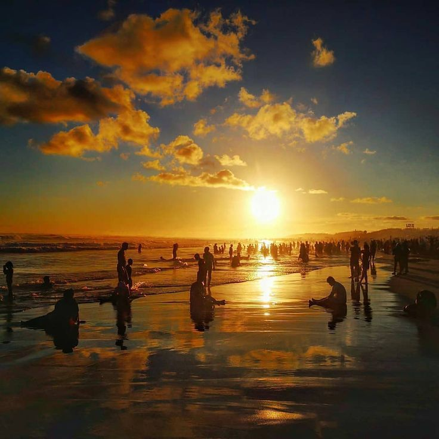

Yogyakarta : Keistimewaan yang Mengundang Rindu
Temukan keindahan budaya, kuliner, dan sejarah di jantung Jawa.
Jelajahi Sekarang✨ Destinasi Pilihan

Candi Borobudur
Mahakarya arsitektur Buddha yang megah dan penuh sejarah.

Pantai Parangtritis
Keindahan pantai selatan dengan legenda Nyi Roro Kidul.

Malioboro
Pusat keramaian, belanja, dan kuliner khas Yogyakarta.
🍽️ Kuliner Khas
Gudeg
Nasi dengan nangka muda yang dimasak dengan santan, manis dan lezat.
Sate Klatak
Sate daging kambing yang ditusuk dengan jeruji sepeda, dibakar dengan bumbu sederhana.
Bakpia Pathok
Camilan wajib dari Jogja, dengan isian kacang hijau yang manis.
🎬 Sesuatu di Jogja
ℹ️ Catatan
Panduan penting untuk perjalanan yang nyaman:
- Cara menuju Jogja (Pesawat, Kereta, Bus, Motor, Mobil)
- Transportasi Lokal (Trans Jogja, Taksi, Sewa Motor)
- Tips & Etika Berwisata (Jaga kebersihan, Hormati budaya lokal, Sikap sopan, Utamakan keselamatan)